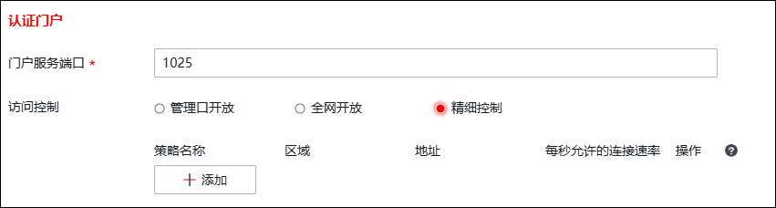
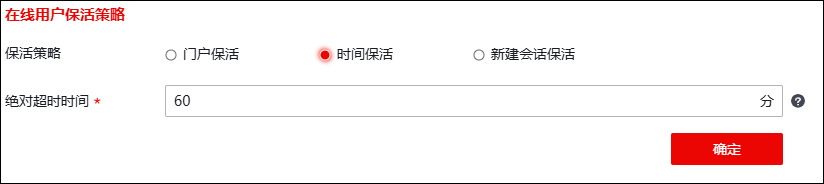

认证管理页面可配置本地门户服务访问控制策略，使其对门户服务放行。
| 步骤1 | 选择 。 |
| 步骤2 | 配置认证门户。 |

在设置认证门户时，各项参数的具体说明如下表所示。
参数 |
说明 |
|---|---|
门户服务端口 |
设置门户服务的端口号。默认1025。 |
访问控制 |
选择访问控制类型。可选择：管理口开放、全网开放、精细控制。 管理口开放，门户服务配置管理口后，由任意地址发出从管理口进入，均可访问。管理口是指本地服务对管理区域MANAGE_AREA开放，请确保MANAGE_AREA接口配置无误。 全网开放，门户服务开放后，可由任意地址发出从任意接口进入，均可访问。 精细控制，是指执行配置多条策略，并由策略决定门户服务的权限，配置后限制从指定地址发出指定接口进入才可访问。 |
精细控制 |
对于访问NGFW的单向报文，仅有命中策略，才可访问NGFW本地，否则将被拦截。 输入策略名称（不可重复），区域对象（报文的入接口）、地址对象（报文的源IP地址），设置每秒建立连接最大数，取值范围：0-65535，0表示不作限制。 说明： 区域MANAGE_AREA表示管理域，地址IPv4_ANY表示所有IPv4地址，地址IPv6_ANY表示所有IPv6地址，地址GROUP_ADDRESS_ANY表示所有IP地址。 |
点击【确定】按钮完成本地服务策略的配置。
| 步骤3 | 在线用户保活策略。 |
用户保活是对登录认证成功后的用户的一种保活机制，用于准确的维护在线用户表。保活方式分为门户保活、新建保活和时间保活。

在设置保活控制配置信息时，各项参数的具体说明如下表所示。
参数 |
说明 |
|---|---|
类型 |
设置保活类型；管理员需要至少配置一种保活类型，以保证本地认证服务器的正常运行。 说明： 1）门户保活：基于门户网站的保活，用户认证成功后，门户网站不关闭用户就不下线；关闭门户网站后，超过设定的空闲超时时间，用户会被强制下线。 2）时间保活：基于绝对超时时间的保活，当用户认证后在设定的绝对超时时间范围内不掉线，超出后用户被强制下线。 3）新建会话保活：基于新建会话报文的保活，用户有新建会话报文产生就不下线，当在空闲超时时间范围内，没有产生新建会话报文，用户被强制下线。 |
空闲超时时间 |
设置门户的保活时间。在“类型”选择“门户保活”或“新建会话保活”时可配置。取值范围为60-3600，单位为秒。 |
绝对超时时间 |
设置门户的保活时间。在“类型”选择“时间保活”时可配置。取值范围为1-1440，单位为分，默认值为60。 |
点击【确定】按钮完成保活控制的配置。